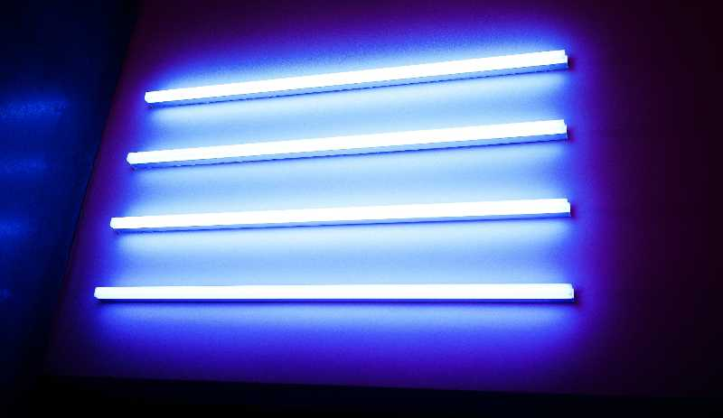

How to Clean your Hydroponic System
A System Cleaning Guide
Today, we will provide some helpful tips and methods on how to clean your hydroponic
system, maintain your hydroponic
system, keep your nutrient reservoir in working condition, and flush and clean your whole system. Let's get it!
Why Clean your System?
Cleaning the system is essential for any hydroponic operation, no matter the level. Pathogens,
bacteria, and algae can
quickly overtake a system if allowed to. Some diseases can ruin a crop of plants in days or even hours.
Additionally,
some diseases and issues can be hazardous to human health. A dirty system can have toxic water or even put
harmful
things into the air. So it’s essential to keep your system clean. The small cost and time required to clean your
system
will save you from headaches down the line.
When is Cleaning Necessary?
Ongoing Maintenance
All systems need sanitization to keep clean. Basic maintenance is required to stay tidy and
reduce the chances of an
outbreak. Ongoing maintenance includes cleaning up water spills, removing dead plants, and washing air filters.
This is
part of your routine involved in managing your hydroponic system.
After a Harvest
Following each harvest, your system needs an intense cleaning. This guarantees no cross-over
between one growth cycle to
another. Preventing bacteria, pathogens, and algae is particularly important during the germination phase, so
having a
thoroughly clean system to start is double important. You can use harsher chemicals and cleaning methods between
crop
cycles, as it will not damage the plants.

Visible Signs of Bacteria, Fungi or Pathogens.
The sooner you act, the better, so as soon as you see signs of growth, attack. Side note: it may
not be a big deal if
you see algae. Algae is natural in any system and doesn’t have a huge impact. However, if algae start to consume
your
system, consider cleaning it.
Materials Necessary for Cleaning your System
Before cleaning your system, find these tools and chemicals to get your system spotless.

Tools Required
Face Masks
Sponges and Old Rags
Gloves and Goggles
Hard Bristle Brushes
Tube Snake Brushes
Scissors
Buckets
Pots to Boil Water
Ozonation Machine (Awesome, but not necessary)
Ultraviolet Light (Awesome, but not necessary)
Chemicals Required
Hydrogen Peroxide
Bleach
Isopropyl Alcohol
Vinegar
Step 1. Clear the System of All Plant Matter
You may have to skip this part if cleaning the system during a growth cycle. You may have lined
up your schedule so that
all of your plants harvest simultaneously, and you can skip most of this step. Either way, at least remove all
dead
plant matter. If you have to, relocate healthy crops elsewhere so you can clean the system thoroughly. That may
be a
mega hassle, but it will save your plants from further issues and ensure a deep, effective clean.
Step 2. Drain Liquid from the System
Now that all the plants are gone start by removing all liquids from your system. If you are
going to recycle your water,
consider draining the water to an alternate container while you clean your system. Check out our guide to
recycling
water. Drain your reservoir and other parts of the system as much as possible. Use a sponger or shop vac to suck
up the
remaining water if water remains.
Step 3. Disassemble and Soak pieces
Break down your system into its smallest parts: Net cups, tubes, nozzles, air pumps, and growing
medium. Then, soak it
in a bath of cleaning chemicals and water. Soak for at least 5 minutes; more isn’t worse, though. Be sure to use
caution and gloves while handling the cleaning
solution; getting it on your skin is not great. For tubing, you can pour the solution down an end to fill the
tube and
get a good clean.
Hydrogen Peroxide
If you’re using 35%, dilute to 1.5% with 20 parts water to 1 part hydrogen peroxide. If you’re
using 3%, dilute to 1.5%
with 2 parts water to 1 part hydrogen peroxide.
Bleach
Bleach strength varies, so check the package to see what is best. Generally, one-third of a cup
can be used for each
gallon of water.
Isopropyl Alcohol
If you’re using 99% isopropyl alcohol, mix 3 parts water with 1 part isopropyl alcohol. If you
got 70%, use 2 parts
water with 1 part isopropyl alcohol.
Vinegar
Vinegar is incredible in that it is more natural than the rest of the cleaning solutions and not
as harmful, but its not
as strong. Mix 1 part water with 2 parts vinegar. You can add a few drops of soap to strengthen your solution if
needed.
Step 4. Scrub Up!
Fill a bucket with the same cleaning solution. Use a sponger or bristle brush to clean
everything. Scrub until there is
no residue left in the system. Wash it all off, then dry the system with a towel. Repeat this to ensure a CLEAN
system.
Did you know the tubes of your system can be the dirtiest parts? This is because they
have a constant supply of
nutrients. Bacteria don't have to compete with plants for nutrients, so it's a prime environment for bacteria.
If
soaking your tubes isn’t enough, you can use a tube brush to clean your tubes.
Step 5. Flush out your system
Fill up your system partially so your pumps can run. Then, let the system run for a couple hours
to get all the leftover
gunk out and to remove all the cleaning chemicals from the system. When you empty it this time, the system must
get
super dry.
Step 6. Let Everything Else Dry
Use a towel to dry everything and let it air dry before using again. Avoid leaving anything wet
inside your system; it
may lead to bacteria, fungi, or pathogens getting into your system and wreaking havoc. If you want to accelerate
the
drying process, bring in fans or turn on your grow lights to provide some heat.
Step 7. Clean the Grow Room
Finally, make sure your growing environment is clean. If you clean all of your equipment at
once, excellent. Take the
time to deep clean everything else in the room. Not only is this standard practice to have an organized
workspace for
your space, but it will also protect the system from outside influences. Vacuum the floors, dust the ceilings,
clean the
tables and dry it all out. Clean everything, even if its not visible. Dust, even in unreachable areas can have
bacteria
and potentially can get into the system.
Optional Steps
These aren't necessary, but they can be great for your system.
Ultraviolet Light/ Ozone Cleaning
Ultraviolet light and Ozone can be used in two situations: cleaning water and cleaning
equipment.

Cleaning Water
To clean water, put your ozone or UV into the reservoir and turn it on. Some research has shown
that ozonated water and
water treated with UV light have decreased bacteria levels, which can be good for your plants. Additionally, UV
light
may degrade chelates, a molecule that makes iron absorption easier for plants. Don't let this discourage you,
though.
Treating water with Ozone or UV can eliminate the risks of bacteria in your system.
Cleaning Equipment
To use an ozone system to clean your hydroponic equipment, put everything you want to clean in a
box, seal it off, and
pump it full of ozone. The longer the treatment, the better. Be sure to either put the box outside or in an
unoccupied
room. Ozone isn’t good for you to breathe. It can cause irritation, chest pain, and coughing if you breathe it
in. The
good news is, that ozone breaks down into O2 fairly quickly. After 4 hours, the room will be safe for you to
enter
again.
To use ultraviolet light to clean your system, Lay out equipment and arrange the UV
lights above them. Blast them with
UV light, flip over the equipment, and turn the lights back on. Avoid exposing your skin to UV light. UV light
isn't
good for you and can cause sunburn and cancer.
Conclusion
You are done! If you follow this well, your system is in top shape to grow some plants.
Regularly cleaning your system
is key to having a happy and healthy system without any headaches.
Questions
If you have any questions regarding how to clean your hydroponic system, or your system in
general reach out to us. We
are more than happy to answer your questions and help you work through your problems. Please don't hesitate to
reach
out. Hydroponicsathome.us@gmail.com